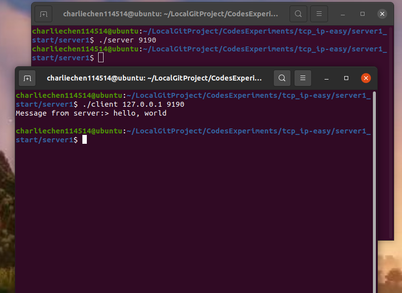
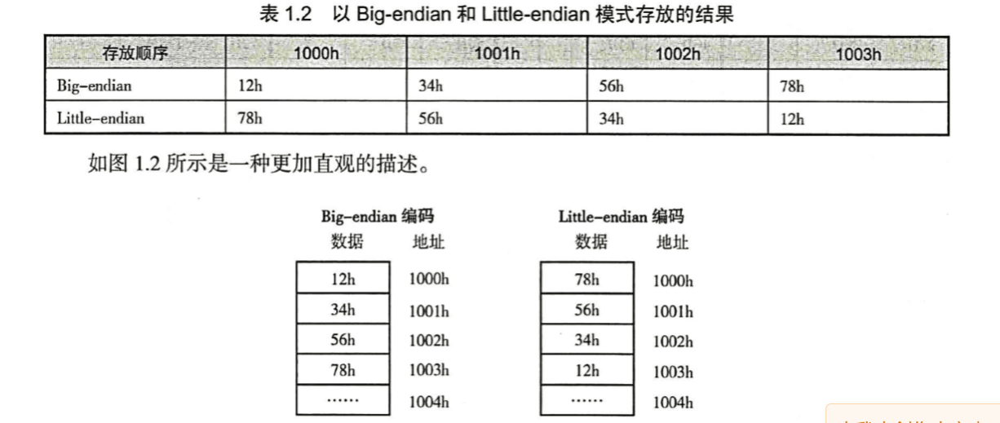
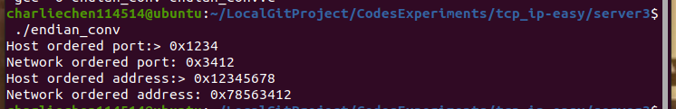
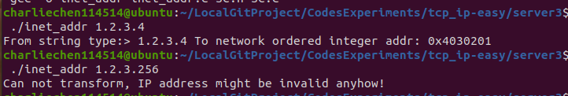
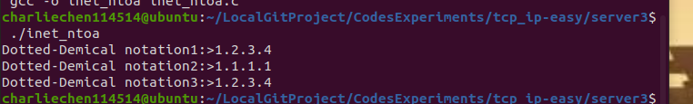

TCP/IP 网络编程笔记——1，2，3
1. 理解网络和套接字
网络编程实在很简单，其实就是一句话： 研究编写使得两台联网的计算机通信的程序！没了！
计算机提供一个叫做socket的东西，实际上就是“套接字”的意思。难以理解？其实就是插头！说白了就是通信的软件接口。
流程
快速的讲一些常见的接口——先把流程梳理明白了——
假装我们是一台计算机（倒不如假设我们的计算机是人），想要跟别的计算机通信，就务必需要——有——电话机
好吧，现在手无寸铁，先整个电话机玩玩
#include <sys/socket.h>
int scoket(int domain, int type, int protocol); 第一个参数说的是用的是什么套接字类型
而这里的type指的是协议面向的种类， 也就是说“type”参数指的是套接字类型，常用的类型有：
- SOCK_STREAM（TCP流）
- SOCK_DGRAM（UDP数据报）
- SOCK_RAW（原始套接字）
协议“protocol”一般设置为“0”，就是说在已经确定套接字使用的协议簇和类型时，这个参数的值就为0
我们将会在稍后看到，作为我们已知使用的协议种类后，只需要这里置0即可。（对于那些无法确定协议种类的才会在这里设置其他东西）
随后，就是bind，有电话机，就需要有电话号码——这个函数就是确定套接字的地址信息，告诉这个套接字要去哪里（IP和端口）
#include <sys/socket.h>
int bind(int sockfd,struct sockaddr* myaddr, socklen_t addrlen); 接下来就是接听（相当于打了电话号码等）
#include <sys/socket.h>
int listen(int sockfd, int backlog);值得一提的sockfd这个fd, 在Linux下指的是file discriptor（描述符，不理解的话可以认为是Windows下的文件句柄）
等到客户端有了响应之后，我们就要摁下同意表示愿意接听
#include <sys/socket.h>
int accept(int sockfd, struct sockaddr* addr, socklen_t* addrlen); 总结一下：
第一步：调用socket创建套接字
第二步：调用bind函数分配IP和端口号
第三步：调用listen函数转化为可接受请求的状态
第四步：调用accept受理链接请求
方便起见，这里就扔下代码：
TIPS: 你的电脑绝对没有SC.h这个文件，因为这是我自己写的，对于那些常见的函数给封装在同一个头文件而不需要反复写，在这个节段：
SC.c
#include "SC.h"
// error handle
void showError(const char* message)
{
fputs(message,stdout);
fputc('\n',stdout);
exit(-1);
}
// show argc help
void showHelp(int argc_n, int agrc_r ,const char* msgHelp)
{
if(argc_n != agrc_r){
printf("%s",msgHelp);
exit(1);
}
}Sc.h
#ifndef _SC_H_
#define _SC_H_
#include <stdio.h>
#include <stdlib.h>
#include <string.h>
#include <unistd.h> // 提供Linux文件IO
#include <arpa/inet.h>
#include <sys/socket.h>
#include <errno.h>
typedef struct sockaddr_in Sockaddr_in;
typedef struct sockaddr Sockaddr;
// pre-announced
void showError(const char* message);
void showHelp(int argc_n, int agrc_r, const char* msgHelp);
// setMemZero
#define ZERO 0
#define ZeroMem(buf) memset(buf, ZERO, sizeof(buf))
#endif服务器端
// include basic files
#include "SC.h"
#include <errno.h>
int main(int argc, char* argv[])
{
int serv_sock;
int clnt_sock;
struct sockaddr_in serv_addr;
struct sockaddr_in clnt_addr;
socklen_t clnt_addr_size;
char message[] = "hello, world\n";
if(argc != 2){
printf("Usage: <port>\n",argv[0]);
exit(1);
}
serv_sock = socket(PF_INET, SOCK_STREAM, 0);
if(serv_sock == -1){
showError("socket Error");
exit(1);
}
memset(&serv_addr, 0, sizeof(serv_addr));
serv_addr.sin_family = AF_INET;
serv_addr.sin_addr.s_addr = htonl(INADDR_ANY);
serv_addr.sin_port = htons(atoi(argv[1]));
if(bind(serv_sock, (struct sockaddr*)&serv_addr,sizeof(serv_addr)) == -1){
printf("%d\n",errno);
showError("bind() Error");
exit(1);
}
if(listen(serv_sock, 5) == -1){
showError("listen() error");
exit(1);
}
clnt_addr_size = sizeof(clnt_addr);
clnt_sock = accept(serv_sock,(struct sockaddr*)&clnt_addr, &clnt_addr_size);
if(clnt_sock == -1){
showError("accept() error");
exit(1);
}
write(clnt_sock, message,sizeof(message));
close(clnt_sock);
close(serv_sock);
return 0;
} 对于客户端，我们只需要给出链接的地址和端口，就可以了：
#include <sys/socket.h>
int connect(int sockfd, struct sockaddr* serv_addr, socklen_t addrlen);第一步：创建套接字（调用socket函数）
第二步：调用connect函数
客户端
#include "SC.h"
int main(int argc, char* argv[])
{
int sock;
Sockaddr_in serv_addr;
char message[30];
int str_len;
showHelp(3,argc,"Usage: argv[0] <IP> <port>\n");
sock = socket(PF_INET,SOCK_STREAM,0);
if(sock == -1){
showError("socket() Error");
}
ZeroMem(&serv_addr);
serv_addr.sin_family = AF_INET;
serv_addr.sin_addr.s_addr = inet_addr(argv[1]);
serv_addr.sin_port = htons(atoi(argv[2]));
if(connect(sock, (Sockaddr*)&serv_addr,sizeof(serv_addr)) == -1){
printf("%d\n",errno);
showError("connect() Error");
}
str_len = read(sock,message,sizeof(message) - 1);
if(str_len == -1){
showError("read() error");
}
printf("Message from server:> %s\n",message);
close(sock);
return 0;
}运行
gcc -o client client.c SC.c SC.h # 产生客户端的可执行代码gcc -o server server.c SC.c SC.h # 产生服务端的可执行代码 然后运行（额，假定你对Linux操作系统是用过的情况下）
./server 9190 # 运行在自己家电脑，IP是127.0.0.1./client 127.0.0.1 9190 
Windows实现
在Windows底下，我们同样可以干这样的事情。这里未来方便于网络而不是环境配置，我们使用VS
不过首先，我们需要链接ws2_32.lib（项目->属性->链接器->输入->附加依赖项）
先来就是初始化相关的库——
#include <winsock2.h>
int WSAStartup(WORD wVersionRequested, LPWSADATA lpWSAData);第一个参数：Winsock的版本（高情商：兼容）
第二个参数：WSADATA这个结构体的地址（相信我，Windows喜欢通过传参数的方式初始化，这是为了可以返回状态而设置的！）
设置版本是使用一个十六位数实现的。咋搞呢？举个例子
我现在的函数有主版本和副版本之称：Winsock 1.1和Winsock 2.1之类的。那么，我就用低8位表达主版本，高8位表达副版本。 那： v$1.2$ $\leftrightarrow$ $0x0201$
啥？别自己手写了
MAKEWORD(1, 2) -> 0x0201
MAKEWORD(2, 2) -> 0x0202 同理：我们来看看Windows 的
服务器端
#include <stdio.h>
#include <stdlib.h>
#include <winsock2.h>
void ErrorHandling(const char* msg);
int main(int argc, char* argv[])
{
WSADATA wsadata;
SOCKET hServSock, hClntSock;
SOCKADDR_IN servAddr, clntAddr;
int szClntAddr;
char message[] = "HelloWorld\n";
if (argc != 2) {
printf("Usage : %s <port>\n", argv[0]);
exit(1);
}
if (WSAStartup(MAKEWORD(2, 2), &wsadata) != 0)
ErrorHandling("WSAStartUp Error");
hServSock = socket(PF_INET, SOCK_STREAM, 0);
if (hServSock == INVALID_SOCKET)
ErrorHandling("socket error");
memset(&servAddr, 0, sizeof(servAddr));
servAddr.sin_family = AF_INET;
servAddr.sin_addr.s_addr=htonl(INADDR_ANY);
servAddr.sin_port = htons(atoi(argv[1]));
if (bind(hServSock, (SOCKADDR*)&servAddr, sizeof(servAddr)) == SOCKET_ERROR)
ErrorHandling("bind error");
if (listen(hServSock, 5) == SOCKET_ERROR)
ErrorHandling("listen error");
szClntAddr = sizeof(clntAddr);
hClntSock = accept(hServSock, (SOCKADDR*)&clntAddr, &szClntAddr);
if (hClntSock == INVALID_SOCKET)
ErrorHandling("accept error");
send(hClntSock, message, sizeof(message), 0);
closesocket(hClntSock);
closesocket(hServSock);
WSACleanup();
return 0;
}
void ErrorHandling(const char* msg)
{
fputs(msg, stderr);
fputc('\n', stderr);
exit(1);
}客户端
#define _WINSOCK_DEPRECATED_NO_WARNINGS 1
#include <stdio.h>
#include <stdlib.h>
#include <winsock2.h>
void ErrorHandling(const char *message);
int main(int argc, char* argv[])
{
WSADATA wsaData;
SOCKET hSocket;
SOCKADDR_IN servAddr;
char message[30];
int strLen = 0;
int idx = 0, readLen = 0;
if (argc != 3)
{
printf("Usage : %s <IP> <port>\n", argv[0]);
exit(1);
}
if (WSAStartup(MAKEWORD(2, 2), &wsaData) != 0)
{
printf("%d\n",GetLastError());
ErrorHandling("WSAStartup() error!");
}
hSocket = socket(PF_INET, SOCK_STREAM, 0);
if (hSocket == INVALID_SOCKET)
ErrorHandling("socket() error!");
memset(&servAddr, 0, sizeof(servAddr));
servAddr.sin_family = AF_INET;
servAddr.sin_addr.s_addr = inet_addr(argv[1]); // IP address
servAddr.sin_port = htons(atoi(argv[2])); // port
if (connect(hSocket, (SOCKADDR*)&servAddr, sizeof(servAddr)) == SOCKET_ERROR)
ErrorHandling("connect() error!");
else
puts("Connected...........");
while (readLen = recv(hSocket, &message[idx++], 1, 0))
{
if (readLen == -1)
ErrorHandling("read() error!");
strLen += readLen;
}
printf("Message from server: %s \n", message);
printf("Function read call count: %d \n", strLen);
closesocket(hSocket);
WSACleanup();
return 0;
}
void ErrorHandling(const char* message)
{
fputs(message, stderr);
fputc('\n', stderr);
exit(1);
}套接字类型和协议设置
啥是协议
你用你的语法说，我用我的语法说，两个人互相听不懂对方说什么，这不无效沟通吗？是的，这玩意的出现就是为了规范通信。
socket函数
回忆下我们刚刚体验过的socket函数。。。啥，不记得了？这里：
#include <sys/socket.h>
int scoket(int domain, int type, int protocol); 我们第一个参数，就是说的用的什么套接字类型，你可以翻看一下sys/socket.h提供的接口
/* Protocol families. */
#define PF_UNSPEC 0 /* Unspecified. */
#define PF_LOCAL 1 /* Local to host (pipes and file-domain). */
#define PF_UNIX PF_LOCAL /* POSIX name for PF_LOCAL. */
#define PF_FILE PF_LOCAL /* Another non-standard name for PF_LOCAL. */
#define PF_INET 2 /* IP protocol family. */
#define PF_AX25 3 /* Amateur Radio AX.25. */
#define PF_IPX 4 /* Novell Internet Protocol. */
#define PF_APPLETALK 5 /* Appletalk DDP. */
#define PF_NETROM 6 /* Amateur radio NetROM. */
#define PF_BRIDGE 7 /* Multiprotocol bridge. */
#define PF_ATMPVC 8 /* ATM PVCs. */
#define PF_X25 9 /* Reserved for X.25 project. */
#define PF_INET6 10 /* IP version 6. */
#define PF_ROSE 11 /* Amateur Radio X.25 PLP. */
#define PF_DECnet 12 /* Reserved for DECnet project. */
#define PF_NETBEUI 13 /* Reserved for 802.2LLC project. */
#define PF_SECURITY 14 /* Security callback pseudo AF. */
#define PF_KEY 15 /* PF_KEY key management API. */
#define PF_NETLINK 16
#define PF_ROUTE PF_NETLINK /* Alias to emulate 4.4BSD. */
#define PF_PACKET 17 /* Packet family. */
#define PF_ASH 18 /* Ash. */
#define PF_ECONET 19 /* Acorn Econet. */
#define PF_ATMSVC 20 /* ATM SVCs. */
#define PF_RDS 21 /* RDS sockets. */
#define PF_SNA 22 /* Linux SNA Project */
#define PF_IRDA 23 /* IRDA sockets. */
#define PF_PPPOX 24 /* PPPoX sockets. */
#define PF_WANPIPE 25 /* Wanpipe API sockets. */
#define PF_LLC 26 /* Linux LLC. */
#define PF_IB 27 /* Native InfiniBand address. */
#define PF_MPLS 28 /* MPLS. */
#define PF_CAN 29 /* Controller Area Network. */
#define PF_TIPC 30 /* TIPC sockets. */
#define PF_BLUETOOTH 31 /* Bluetooth sockets. */
#define PF_IUCV 32 /* IUCV sockets. */
#define PF_RXRPC 33 /* RxRPC sockets. */
#define PF_ISDN 34 /* mISDN sockets. */
#define PF_PHONET 35 /* Phonet sockets. */
#define PF_IEEE802154 36 /* IEEE 802.15.4 sockets. */
#define PF_CAIF 37 /* CAIF sockets. */
#define PF_ALG 38 /* Algorithm sockets. */
#define PF_NFC 39 /* NFC sockets. */
#define PF_VSOCK 40 /* vSockets. */
#define PF_KCM 41 /* Kernel Connection Multiplexor. */
#define PF_QIPCRTR 42 /* Qualcomm IPC Router. */
#define PF_SMC 43 /* SMC sockets. */
#define PF_XDP 44 /* XDP sockets. */
#define PF_MAX 45 /* For now.. */ 我去，这可太多了，我们现在，主要聚焦在如下的几个协议族
| 名称 | 协议族 |
|---|---|
PF_INET |
IPv4互联网协议族 |
PF_INET6 |
IPv6互联网协议族 |
PF_LOCAL |
本地通信的互联网协议族 |
PF_PACKET |
底层套接字的协议族 |
PF_IPX |
IPX Novell协议族 |
那为什么还要有第二个参数呢？答案很简单，就算是我们选定了协议族，其内部还是有很多其他的数据通信方式。我们怎么传？是安全优先还是速度优先呢？
enum __socket_type
{
SOCK_STREAM = 1, /* Sequenced, reliable, connection-based
byte streams. */
#define SOCK_STREAM SOCK_STREAM
SOCK_DGRAM = 2, /* Connectionless, unreliable datagrams
of fixed maximum length. */
#define SOCK_DGRAM SOCK_DGRAM
SOCK_RAW = 3, /* Raw protocol interface. */
#define SOCK_RAW SOCK_RAW
SOCK_RDM = 4, /* Reliably-delivered messages. */
#define SOCK_RDM SOCK_RDM
SOCK_SEQPACKET = 5, /* Sequenced, reliable, connection-based,
datagrams of fixed maximum length. */
#define SOCK_SEQPACKET SOCK_SEQPACKET
SOCK_DCCP = 6, /* Datagram Congestion Control Protocol. */
#define SOCK_DCCP SOCK_DCCP
SOCK_PACKET = 10, /* Linux specific way of getting packets
at the dev level. For writing rarp and
other similar things on the user level. */
#define SOCK_PACKET SOCK_PACKET
/* Flags to be ORed into the type parameter of socket and socketpair and
used for the flags parameter of paccept. */
SOCK_CLOEXEC = 02000000, /* Atomically set close-on-exec flag for the
new descriptor(s). */
#define SOCK_CLOEXEC SOCK_CLOEXEC
SOCK_NONBLOCK = 00004000 /* Atomically mark descriptor(s) as
non-blocking. */
#define SOCK_NONBLOCK SOCK_NONBLOCK
};SOCK_STREAM：面向链接的套接字
- 这个传输过程中的数据不会消失，
- 并且，会按照顺序依次传输数据，
- 传输的数据不会存在数据的边界
SOCK_DGRAM
- 强调快速传输而不是顺序传输
- 传输的数据可能丢失
- 传输的数据是有边界的
- 限制每次传输的数据大小
第三个参数…
我们还会需要第三个参数，为什么呢？
遇到了同一协议族下多个数据传输方式相同的协议
这个时候，第三个参数就可以用来指定特定的一个——不过大可以放心，一般用不到，我们会置成0
我们使用TCP来做个例子
#include "SC.h"
int main(int argc, char* argv[])
{
int sock;
Sockaddr_in serv_addr;
char message[30];
int str_len = 0;
int idx = 0, read_len = 0;
showHelp(3,argc,"Usage: argv[0] <IP> <port>\n");
sock = socket(PF_INET,SOCK_STREAM,0);
if(sock == -1){
showError("socket() Error");
}
ZeroMem(&serv_addr);
serv_addr.sin_family = AF_INET;
serv_addr.sin_addr.s_addr = inet_addr(argv[1]);
serv_addr.sin_port = htons(atoi(argv[2]));
if(connect(sock, (Sockaddr*)&serv_addr,sizeof(serv_addr)) == -1){
printf("%d\n",errno);
showError("connect() Error");
}
// MODIFY THIS BLOCK TO THIS in client.c
while(read_len = read(sock, &message[idx++],1)){
if(read_len == -1){
showError("read() Error");
}
str_len += read_len;
}
printf("Message from server:> %s\n",message);
printf("Function read call count: %d\n",str_len);
close(sock);
return 0;
} 只需要调整一下
地址组与数据序列
分配给套接字的IP和端口
IP地址现在分两类：
| IP地址种类 | 说明 |
|---|---|
| IPv4 | 4字节地址序列 |
| IPv6 | 16字节地址序列 |
只需通过IP地址的第一个字节可判断网络地址占用的字节数，因为我们根据IP地址的边界区分网络地址：
A类地址的首字节范围：0-127
B类地址的首字节范围：128-191
C类地址的首字节范围：192-223
还有以下表述方式：
A类地址的首位以0开始
B类地址的前2位以10开始
C类地址的前3位以110开始
简单的说:IPv4地址是由两个部分构成的
网络号码字段（Net-id）：IP 地址的网络号码字段用来标识一个网络，网络号码字段的前几位用来区分 IP 地址的类型。
主机号码字段（Host-id）：主机号码字段用来区分一个网络内的不同主机。对于网络号相同的设备，无论实际所处的物理位置如何，它们都是处在同一个网络中。
IP用于区分计算机，只要有IP地址就能向目标主机传输数据，但仅凭这些无法传输给最终的应用程序。如网上看视频的同时网上聊天，这时至少需要1个接收视频数据的套接字和一个接收聊天信息的套接字。如何区分这些套接字呢？
计算机中一般有网络接口卡数据传输设备，通过NIC向计算机内部传输数据时会用到IP。操作系统负责把传递到内部的数据适当分配给套接字，这时就要利用端口号。通过NIC接收的数据内有端口号，操作系统正是参考此端口号把数据传输给相应端口的套接字。
端口号就是在同一操作系统内为区分不同套接字而设置的，因此无法将1个端口号分配给不同的套接字。端口号由16位构成，可分配的端口号范围是0-65535。但0-1023是知名端口，一般分配给特定应用程序。虽然端口号不能重复，但TCP套接字和UDP套接字不会共用端口号，所以允许重复。例如：如果某TCP套接字使用9190号端口，则其他TCP套接字就无法使用该端口号，但UDP套接字可以使用。
数据传输目标地址同时包含IP地址和端口号。
地址信息表示
好,当你看完上面的一节了,我们就可以产生如下的对话
用啥地址组？
IPv4的
IP地址呢
114.5.1.4
端口号？
1919
于是，直接用一个结构体，回答上面的所有问题
struct sockaddr_in
{
__SOCKADDR_COMMON (sin_);// 本质上是 sa_family_t sin_family
in_port_t sin_port; /* Port number. */
struct in_addr sin_addr; /* Internet address. */
/* Pad to size of `struct sockaddr'. */
unsigned char sin_zero[sizeof (struct sockaddr)
- __SOCKADDR_COMMON_SIZE
- sizeof (in_port_t)
- sizeof (struct in_addr)];
}; 哦对了，这个
struct in_addr sin_addr; 是对IP地址的封装，其实他是
/* Internet address. */
typedef uint32_t in_addr_t;
struct in_addr
{
in_addr_t s_addr;
};TIPS: 在Linux（倒不如说是POSIX）下，系统定义的数据类型会在后面加上一个_t表示系统定义的
sin_family
/* Address families. */
#define AF_UNSPEC PF_UNSPEC
#define AF_LOCAL PF_LOCAL
#define AF_UNIX PF_UNIX
#define AF_FILE PF_FILE
#define AF_INET PF_INET
#define AF_AX25 PF_AX25
#define AF_IPX PF_IPX
#define AF_APPLETALK PF_APPLETALK
#define AF_NETROM PF_NETROM
#define AF_BRIDGE PF_BRIDGE
#define AF_ATMPVC PF_ATMPVC
#define AF_X25 PF_X25
#define AF_INET6 PF_INET6
#define AF_ROSE PF_ROSE
#define AF_DECnet PF_DECnet
#define AF_NETBEUI PF_NETBEUI
#define AF_SECURITY PF_SECURITY
#define AF_KEY PF_KEY
#define AF_NETLINK PF_NETLINK
#define AF_ROUTE PF_ROUTE
#define AF_PACKET PF_PACKET
#define AF_ASH PF_ASH
#define AF_ECONET PF_ECONET
#define AF_ATMSVC PF_ATMSVC
#define AF_RDS PF_RDS
#define AF_SNA PF_SNA
#define AF_IRDA PF_IRDA
#define AF_PPPOX PF_PPPOX
#define AF_WANPIPE PF_WANPIPE
#define AF_LLC PF_LLC
#define AF_IB PF_IB
#define AF_MPLS PF_MPLS
#define AF_CAN PF_CAN
#define AF_TIPC PF_TIPC
#define AF_BLUETOOTH PF_BLUETOOTH
#define AF_IUCV PF_IUCV
#define AF_RXRPC PF_RXRPC
#define AF_ISDN PF_ISDN
#define AF_PHONET PF_PHONET
#define AF_IEEE802154 PF_IEEE802154
#define AF_CAIF PF_CAIF
#define AF_ALG PF_ALG
#define AF_NFC PF_NFC
#define AF_VSOCK PF_VSOCK
#define AF_KCM PF_KCM
#define AF_QIPCRTR PF_QIPCRTR
#define AF_SMC PF_SMC
#define AF_XDP PF_XDP
#define AF_MAX PF_MAX 这是在Linux下定义的，当然，我们常常使用的：就是下面三个
地址组(Address Family) AF |
含义 |
|---|---|
AF_INET |
IPv4地址组 |
AF_INET6 |
IPv6地址组 |
AF_LOCAL |
本地通信采用的UNIX协议地址组 |
sin_port
保存16位端口
sin_addr
保存32位IP地址信息
sin_zero
为了跟sockaddr结构体保持一致，必须填充0
网络字节序和地址变换
CPU向内存保存数据的方式有两种：
- 大端序：高位字节放到低位去
- 小端序：低位字节放到高位去

那么，我们就必须考虑传输数据的时候双方存储方式不一致的问题（解析数据可能会出错），解决的办法也是出乎意料的简单——规定传输的是大端序。
我们无论如何，都会把数据处理成大端序格式存储的，在进行传输——很简单吧（喜）
uint32_t htonl(uint32_t hostlong);
uint16_t htons(uint16_t hostshort);
uint32_t ntohl(uint32_t netlong);
uint16_t ntohs(uint16_t netshort);
h表示host，指小端，n表示network指大端，l表示32位长整数，s表示16位短整数。
举个例子：ntohs的意思就是吧short字节（s）从网络字节序（n）转换成主机字节序（h）
来个实操
#include <stdio.h>
#include <arpa/inet.h>
int main(int argc, char* argv[])
{
unsigned short host_port = 0x1234;
unsigned short net_port;
unsigned long host_addr = 0x12345678;
unsigned long net_addr;
net_port = htons(host_port);
net_addr = htonl(host_addr);
printf("Host ordered port:> %#x\n", host_port);
printf("Network ordered port: %#x\n", net_port);
printf("Host ordered address:> %#lx\n", host_addr);
printf("Network ordered address: %#lx\n", net_addr);
}
网络地址的初始化与分配
我们这里介绍一些接口，可以讲字符串格式的IP地址转化成整数类型的。
#include <arpa/inet.h>
in_addr_t inet_addr(const char* string); 这个函数转化成功就会返回转化成功后的数字，否则返回INADDR_NONE
#include <stdio.h>
#include <arpa/inet.h>
#include "SC.h"
int main(int argc, char* argv[])
{
showHelp(argc,2,"USAGE: ./file IP");
unsigned long conv_addr = inet_addr(argv[1]);
if(conv_addr == INADDR_NONE){
showError("Can not transform, IP address might be invalid anyhow!");
}
else{
printf("From string type:> %s To network ordered integer addr: %#lx \n",argv[1],conv_addr);
}
return 0;
}
当然，我们更加经常使用的是inet_aton，这是因为我们常常会使用sockaddr_in这个结构体，这个函数会自动的吧结果填入到结构体当中！简单而不复杂
当然也可以倒过来
#include <arpa/inet.h>
char* inet_ntoa(struct in_addr adr);#include "SC.h"
int main()
{
Sockaddr_in addr1, addr2;
char* pStr;
char str[20];
addr1.sin_addr.s_addr = htonl(0x1020304);
addr2.sin_addr.s_addr = htonl(0x1010101);
pStr = inet_ntoa(addr1.sin_addr);
strcpy(str,pStr);
printf("Dotted-Demical notation1:>%s\n",pStr);
inet_ntoa(addr2.sin_addr);
printf("Dotted-Demical notation2:>%s\n",pStr);
printf("Dotted-Demical notation3:>%s\n",str);
}
网络地址初始化
结合前面的内容，介绍套接字创建过程中，常见的网络信息初始化方法：
struct sockaddr_in addr;
char *serv_ip = "211.217,168.13"; //声明IP地址族
char *serv_port = "9190"; //声明端口号字符串
memset(&addr, 0, sizeof(addr)); //结构体变量 addr 的所有成员初始化为0
addr.sin_family = AF_INET; //制定地址族
addr.sin_addr.s_addr = inet_addr(serv_ip); //基于字符串的IP地址初始化
addr.sin_port = htons(atoi(serv_port)); //基于字符串的IP地址端口号初始化INADDR_ANY
每次创建服务器端套接字都要输入IP地址会有些繁琐，此时可如下初始化地址信息：
struct sockaddr_in addr;
char * serv_port = "9190";
memset(&addr, 0, sizeof(addr));
addr.sin_family = AF_INET;
add.sin_addr.s_addr = htonl(INADDR_ANY);
addr.sin_port = htons(atoi(serv_port));与之前方式的区别
与之前方式最大的区别在于，利用常数INADDR_ANY分配服务器端的IP地址。
——若采用这种方式，则可自动获取运行服务器端的计算机IP地址，不必亲自输入。
——而且，若同一计算机中已分配多个IP地址(多宿主(Multi-homed)计算机，一般路由器属于这一类)，则只要端口号一致，就可以从不同IP地址接收数据。
因此，服务器端中优先考虑这种方式。而客户端中除非带有一部分服务器端功能，否则不会采用。
创建服务器端套接字时需要IP地址的原因
问题： 初始化服务器端套接字时应分配所属计算机的IP地址，因为初始化时使用的IP地址非常明确，那为何还要进行IP初始化呢？
答案： 同一计算机中可以分配多个IP地址，实际IP地址的个数与计算机中安装的NIC的数量相等。即使是服务器端套接字，也需要决定应接收哪个IP地址传来的(哪个NIC传来的)数据。因此，服务器端套接字初始化过程中要求IP地址信息。另外，若只有一个NIC，则直接使用INADDR_ANY。
Windows实现
#include <stdio.h>
#include <winsock2.h>
void ErrorHandling(char *message);
int main(int agrc, char* agrv[])
{
WSADATA wsaData;
unsigned short host_port = 0x1234;
unsigned short net_port;
unsigned long host_addr = 0x12345678;
unsigned long net_addr;
if(WSAStartup(MAKEWORD(2,2),&wsaData) != 0)
ErrorHandling("WSAStartup() error!");
net_port = htons(host_port);
net_addr = htonl(host_addr);
printf("Host ordered port: %#x \n", host_port);
printf("Network ordered port: %#x \n", net_port);
printf("Host ordered address: %#lx \n", host_addr);
printf("Network ordered address: %#lx \n", net_addr);
WSACleanup();
return 0;
}
void ErrorHandling(char *message)
{
fputs(message, stderr);
fputc('\n', stderr);
exit(1);
}#define _WINSOCK_DEPRECATED_NO_WARNINGS 1
#define _CRT_SECURE_NO_WARNINGS 1
#include<stdio.h>
#include<winsock2.h>
int main(int argc, char* argv[])
{
WSADATA wsaData;
if(WSAStartup(MAKEWORD(2,2),&wsaData)!=0)
{
printf("WSAStartup failed\n");
return 1;
}
{
char* addr = "127.212.124.78";
unsigned long conv_addr = inet_addr(addr);
if(conv_addr == INADDR_NONE)
printf("Error occured! \n");
else
printf("Network ordered integer addr: %#lx \n",conv_addr);
}
{
struct sockaddr_in addr;
char* strPtr;
char strArr[20];
addr.sin_addr.s_addr = htonl(0x1020304);
strPtr = inet_ntoa(addr.sin_addr);
strcpy(strArr,strPtr);
printf("Dotted-Decimal notation3 %s \n",strArr);
}
WSACleanup();
return 0;
}